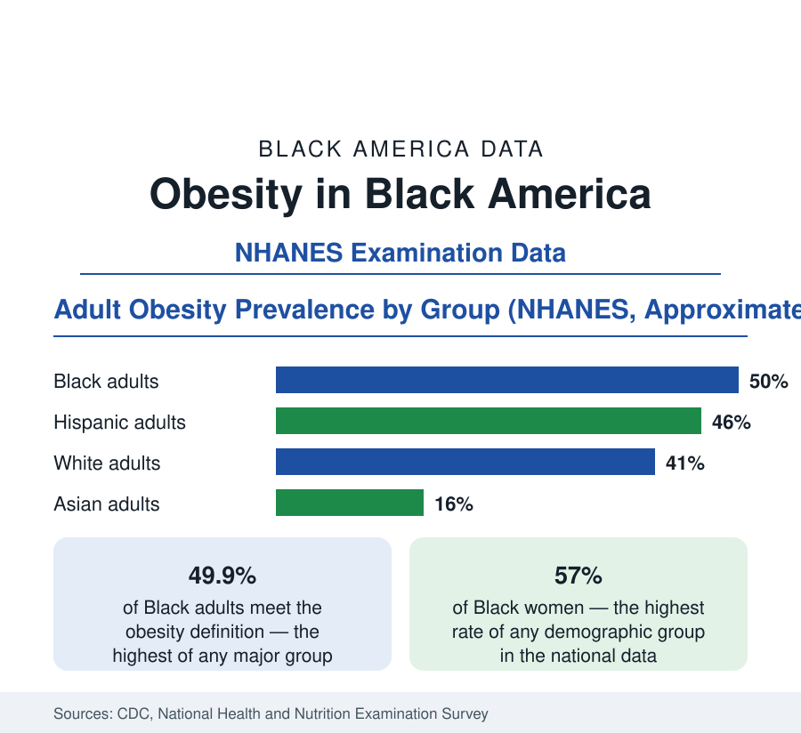

Black Public Health
Obesity Among Black Adults: Half the Population, by Measurement
About half of Black adults — and nearly 57 percent of Black women — meet the clinical definition of obesity in the federal examination surveys. The NHANES data.

About half of Black adults in the United States — 49.9 percent in the most widely cited federal examination cycle — meet the clinical definition of obesity, a body mass index of 30 or above. Among Black women the figure reaches roughly 57 percent, the highest rate recorded for any demographic group in the country. These numbers come not from self-report but from the National Health and Nutrition Examination Survey, in which respondents are weighed and measured, and they anchor the risk-factor data of this entire section: obesity is the substrate beneath the hypertension, diabetes, and heart disease profiles. This article reports the measurement data and its distribution.
How Obesity Is Measured
NHANES is the gold-standard source because it measures rather than asks: trained examiners record height and weight in mobile examination centers for a national sample, and the body mass index computed from them classifies weight status — overweight at 25 to 29.9, obesity at 30 and above, severe obesity at 40 and above. The survey-based alternative, the telephone Behavioral Risk Factor system in which people report their own height and weight, returns figures several points lower for every group, a known understatement. The BMI definition itself carries documented limitations — it does not distinguish muscle from fat and its thresholds were calibrated on other populations — which the clinical literature debates; but as the uniform national yardstick, applied identically to everyone, it is the basis of every comparison in this article.
The Distribution: Sex, Age, and Income
The Black obesity figure is really two figures. Black women's rate, near 57 percent, exceeds Black men's — around 41 percent — by roughly sixteen points, one of the largest sex gaps in the health data; the corresponding national gap is a few points. Age traces the expected curve, rising through middle age and easing in the oldest cohorts. Severe obesity, BMI of 40 and above, affects roughly one in seven Black women, again the national maximum. Income and education gradients, strong for women nationally, run weaker among Black women in the examination data — obesity prevalence remains high across income levels — a pattern the literature treats as evidence that the drivers are not reducible to individual purchasing choices: food environments, occupational structure, shift work and sleep, stress physiology, and targeted marketing all appear in the research models.
Children and Adolescents
The youth data extend the profile downward in age. Black children and adolescents record obesity at roughly a quarter of their population in the examination and school-based series — above the national youth figure of about a fifth — with the gap present from the earliest measured ages and widening through adolescence. School-based fitness and BMI surveillance in several states shows the same ordering. The childhood numbers matter to the adult statistics arithmetically: obesity tracks from adolescence into adulthood at high rates in the longitudinal studies, so the youth prevalence of one cohort becomes the middle-aged prevalence of the next. School food programs, recess and physical education provision, and neighborhood food retail are the intervention sites the literature evaluates.
Consequences in the Health Data
Obesity's place in this reference is as a multiplier. It is the strongest single risk factor for the type 2 diabetes of the diabetes profile; it drives a large share of the hypertension prevalence; it loads the joints (osteoarthritis rates and joint replacement needs follow it), raises several cancer risks in the registry literature, worsens sleep apnea, and compounds in pregnancy. The mortality attribution studies assign it a substantial share of the life-expectancy gap's mechanics. Treatment data show the newest chapter: the GLP-1 class of medications has produced the first large, sustained weight reductions in trial populations, and the access data — insurance coverage, prescribing rates by demographic — are now a tracked series, with early readings showing Black patients receiving the new therapies at rates below their share of the eligible population.
Reading the Obesity Data
The honest reading of the NHANES tables is structural. A condition affecting half a population — and nearly three-fifths of its women — is not a distribution of individual failures; it is the measurable output of the environments, occupations, food systems, and stress loads that population inhabits, recorded on the body. The trend line offers the final datum: Black adult obesity rose for decades alongside the nation's, and the most recent cycles show a plateau at the current level — stabilization at the highest prevalence in the country, which is the baseline every prevention target in this section is written against.
More in Black Public Health
Hypertension Among Black Adults: Prevalence, Control, and Consequences
About 55 percent of Black adults have hypertension — the highest rate of any U.S. group. Prevalence, onset, control, and the stroke, heart, and kidney consequences in the data.
Diabetes Among Black Adults: Prevalence and Complications
Nearly one in five Black adults has diabetes, diagnosed or undiagnosed — and its complications fall with particular weight. The CDC data on prevalence, control, and outcomes.
Black Life Expectancy: The Gap at Birth and Its Causes
Black life expectancy at birth is about 73 years, roughly five years below the national figure — the summary measure of every health gap in this section. The CDC data.
Source: CDC, National Health and Nutrition Examination Survey (NHANES); CDC National Center for Health Statistics Data Briefs.